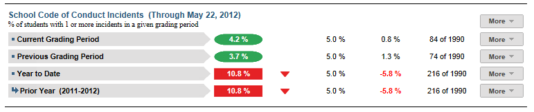

Dashboard Metrics


School Code of Conduct Incidents
Background
District Dashboard Metrics
To enable educators to promptly identify and respond appropriately to the number and severity of student misbehavior incidences, many school districts across the country, including Charlotte, Chicago and Dallas, have incorporated measures of student discipline into their internal performance management dashboards. In focus groups conducted with educators, a Discipline Referrals metric was considered useful by 96% of those surveyed. In order to differentiate discipline referrals by degree of severity in terms of both nature and frequency, two metrics, one monitoring all discipline incidents and one monitoring only school code of conduct incidents, were included in the campus dashboard.
Primary Metric
- School Code of Conduct Incidents: percentage of students with one or more school code of conduct incidents within a given grading period, reported for the current grading period and year to date.
Related Metric
- All Discipline Incidents: percentage of students with one or more discipline incidents outside of the school code of conduct within a given grading period, reported for the current grading period and year to date.
User Interface
Dashboard Example
Figure 1 shows the School Code of Conduct Incidents metric as seen on the district dashboard.

Figure 1 Ed-Fi District School Code of Conduct Incidents Metric
Status Definition
This metric indicates the percentage of students with one or more discipline incidents representing minor infractions of the School Code of Conduct over the current grading period to date and the school year to date.
The Status indicator is determined by district goals. The Ed-Fi default thresholds for each grading period and year to date are 5%.
Metric Indicators | Comparisons | |||
Metric Name | Sub-metric Name | Metric Status Indicator | Trend | Campus Attainment |
All Discipline Incidents | Current Grading Period | Red (Percentage) = if percentage of students with discipline incidents is greater than or equal district goal Green (Percentage) = if percentage of students with discipline incidents less than district goal | Current and prior grading period | The number of campuses meeting their campus goal over the number of campuses with data for the metric |
Year to Date | Red (Percentage) = if percentage of students with discipline incidents greater than or equal to district goal Green (Percentage) =if percentage of students with discipline incidents less than district goal | Trend is not shown for the year to date | The number of campuses meeting their campus goal over the number of campuses with data for the metric | |
Trend Definition
Trend Indicators: Objective is to indicate School Code of Conduct Incidents | |||
| Up green | If the value for the current time frame is more than 5 percentage points higher than the prior time frame, then display a gray arrow trending upward. | |
| Unchanged | If the value for the current time frame is less than or equal to 5 percentage points higher or less than or equal to 5 percentage points lower, then display two gray arrows pointing outward indicating no direction. | |
| Down red | If the value for the current time frame is more than 5 percentage points lower than the prior time frame, then display a gray arrow trending downward. | |
The trend does not show for the first occurrence of a time frame since data is not available.
Delta Definition
The delta appears only in the campus list and displays the individual campus goals rather than the district goal.
Delta Indicators: Objective is to indicate School Code of Conduct Incidents Rate | |||
Metric Name | Sub-Metric Name | Campus Goal | Delta |
School Code of Conduct Incidents | Current Grading Period | Set campus goal | Red (Percentage) = if the calculated delta is less than the campus goal Black( Percentage) = if the calculated delta is equal to or greater than the campus goal |
Year to Date | Set campus goal | Red (Percentage) = if the calculated delta is less than the campus goal Black (Percentage) = if the calculated delta is equal to or greater than the campus goal | |
Periodicity
Best practice is to upload the data frequently, at least weekly, though there is still some benefit from loading monthly.
Recommended Load Characteristics | |
Calendar | Weekly, Monthly |
Frequency of data load | Weekly |
Latency | 2-4 weeks |
Interchange schema | Interchange-StudentDiscipline.xsd |
Tooltips
The standard tool tips for the metric definition, column headers, and help functions display for this metric.
 is ‘No change from the prior period'
is ‘No change from the prior period' is ‘Getting worse from the prior period’
is ‘Getting worse from the prior period’ is 'Getting better from the prior period'
is 'Getting better from the prior period'
Business Rules
The discipline metrics indicate the level and type of discipline incidents taking place in a district over various time periods. Districts and states vary in the how discipline incidents and actions are categorized. The following rules apply to Ed-Fi dashboard tools.
The School Code of Conduct Incidents metric displays the percentage of students with one or more discipline incidents in the time period representing minor infractions where the student is identified as a “Perpetrator” (i.e., a student who committed the discipline incident).
Discipline incidents are counted, regardless of whether a discipline action has resulted.
This metric displays the school code of conduct incident rate for the following grading periods:
- Current Grading Period to date
- Year to Date
The length of the grading period is configurable and is defined by the district—typically either 6 or 9 weeks.
Data Assumptions
- The district must record discipline incidents and actions and categorize them by type.
- While state or district regulations may require certain actions for certain types of incidents, Ed-Fi does not validate these rules, but rather displays what is recorded.
- Transfer (late enrollment) students may not have a complete history of discipline referrals for the current school year.
Computed Values
The cohort is the set of all current students over all grades at the campus, at the time of the last upload.
Metric Name | Calculation |
School Code of Conduct Incidents | Number of current students with one or more minor infractions coded as "school code of conduct" * 100 / All current students in the cohort |
Calculation Notes
- Students who are not enrolled at the time of the last upload are excluded from the calculation.
Data Anomalies
Date of Refresh
Best practice is for the date of last data refresh to appear next the metric in the following format:
- (Through April 2010)
Implementation Considerations
Student Identity
Maintaining a correct and consistent student identity is at the center of any education data system. Most systems use some sort of unique identifier. However, sometimes this identifier is entered incorrectly or sometimes different systems use different identifiers.
The UDM XML supports the interchange of multiple types of identifiers. The StudentReference is a complex type within the UDM to maintain the referential integrity of the student (that is, ensuring that the data associated with each student is accurately associated with the right student). The complex type of the student reference assists with implementing the accurate matching algorithm to identify a student by utilizing any of the individual attributes (e.g., Student Unique State ID, Student ID, Campus Local ID (with Campus ID), Name and Birth Date). For example, if the Student Unique State ID is unknown, you can find the student’s identity by their Student ID, First Name, Last Name and Birth Date.
Late Enrollments
For late enrollment students, the full history of discipline referrals may not be available, resulting in an understatement of the metric.
Classification of Incidents
The classification of incidents, particularly the most serious incidents, may be driven by state reporting requirements. Ideally a district would want to incorporate both state and local classification of incidents—the UDM is extensible to enable a district to map additional classification types. Additionally, the metric definition can be modified to account for the specific number of incident types that are included in the calculation.
Thresholds
A secure mechanism is required to allow the district to set and maintain thresholds.
Frequency of Uploading Data
The metric computation implementation may vary depending on the periodicity of loading the data. For example, a daily load requires that you load data for only a single day (i.e., the last instruction day). Less frequent uploads require that you load data for each day since the date of the last load.
Aggregate Metric Inclusions and Exclusions of Special Education Students
Each campus's aggregate metrics may include or exclude the special education population, depending on the intended purpose for a specific metric and campus goal. This may affect the district metric.
Drill Downs
Drill Down Views
The dashboards include the option to drill down and see more detail that is associated with a metric. Table 7 lists the drill down views that are recommended for this metric.
Table 7 Drill Down Views for All Discipline Incidents Metric
| Campus List | List of campuses who do not meet their campus threshold for this metric for the "specified timeframe" |